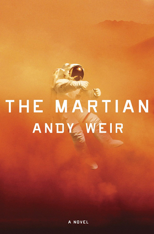
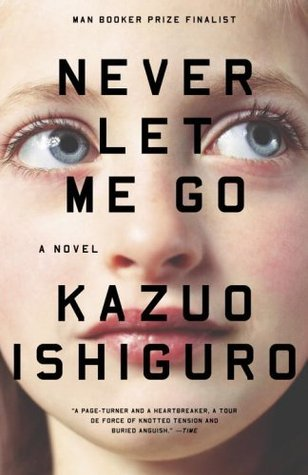

Reading
Recently, helped by spending 3 months travelling and then being locked indoors due to a global pandemic, I have become an avid reader. I have always enjoyed it, but since being an adult, I have never had reading as part of my routine or as a prioritised hobby. However, having found myself with more time on my hands now, I have been hooked on many books. I created a Goodreads account in order to track my reading. I thought this would be helpful to get new recommendations and to remember what I have been reading and my opinions on the books I read.
Goodreads has a function where users can set a reading goal for the year. Tentitively I set the goal of 40 books, thinking that 1 a week was too ambitious. In June 2020, I surpassed this goal so I have reset it, and hopefully I can keep up the pace as I have doubled it to 80.
Some of my favourite books
 